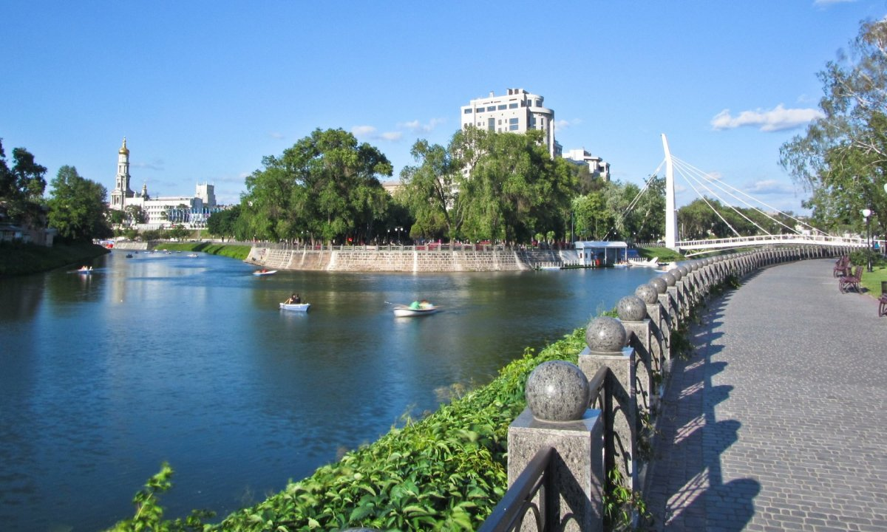

Народився 09.01.2006 у місті Краматорськ
Базова освіта - Краматорський ліцей №35 імені В. Шеймана
Вища освіта - НТУУ "КПІ імені Ігоря Сікорського"
Харків – величне та славетне місто, що розкинулося на сході України. Це друге за кількістю мешканців місто України і йому є чим здивувати гостей. Могутнє, світле, мальовниче. Красується, милує людське око.
Не дарма Харків колись мав честь бути столицею України. І хоч не так довго, але залишив свій слід у історії нашої держави. Та радянські часи минули й столицю перенесли, але місто, як потужний промисловий центр, функціонує і далі, збагачує країну. Також Харків – це центр наукового та студентського самоврядування.
